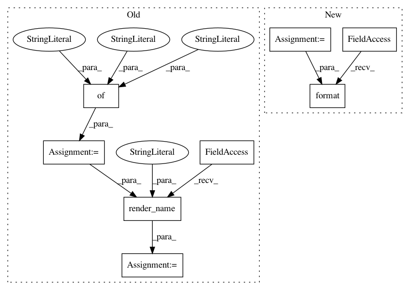

c7e6e4cfd90d2d05bb9c9dffd519b32e9a1f15f6,src/python/pants/reporting/html_reporter.py,HtmlReporter,end_workunit,#HtmlReporter#Any#,124
Before Change
unaccounted_time_secs = workunit.unaccounted_time()
if unaccounted_time_secs >= 1 and unaccounted_time_secs > 0.05 * duration:
unaccounted_time = "{:.3f}".format(unaccounted_time_secs)
args = {"workunit": workunit.to_dict(),
"status": HtmlReporter._outcome_css_classes[workunit.outcome()],
"timing": timing,
"unaccounted_time": unaccounted_time,
"aborted": workunit.outcome() == WorkUnit.ABORTED}
s = ""
if workunit.has_label(WorkUnitLabel.TOOL):
s += self._renderer.render_name("tool_invocation_end", args)
s += self._renderer.render_name("workunit_end", args)
self._emit(s)
// If we"re a root workunit, force an overwrite, as we may be the last ever write in this run.
After Change
if unaccounted_time_secs >= 1 and unaccounted_time_secs > 0.05 * duration:
unaccounted_time = "{:.3f}".format(unaccounted_time_secs)
status = HtmlReporter._outcome_css_classes[workunit.outcome()]
if workunit.has_label(WorkUnitLabel.TOOL):
self._emit(self._end_tool_invocation_fmt_string.format(
id=workunit.id,
status=status
))
self._emit(self._end_workunit_fmt_string.format(
id=workunit.id,
In pattern: SUPERPATTERN
Frequency: 3
Non-data size: 8
Instances
Project Name: pantsbuild/pants
Commit Name: c7e6e4cfd90d2d05bb9c9dffd519b32e9a1f15f6
Time: 2015-10-23
Author: benjyw@gmail.com
File Name: src/python/pants/reporting/html_reporter.py
Class Name: HtmlReporter
Method Name: end_workunit
Project Name: pantsbuild/pants
Commit Name: c7e6e4cfd90d2d05bb9c9dffd519b32e9a1f15f6
Time: 2015-10-23
Author: benjyw@gmail.com
File Name: src/python/pants/reporting/html_reporter.py
Class Name: HtmlReporter
Method Name: do_handle_log
Project Name: pantsbuild/pants
Commit Name: c7e6e4cfd90d2d05bb9c9dffd519b32e9a1f15f6
Time: 2015-10-23
Author: benjyw@gmail.com
File Name: src/python/pants/reporting/html_reporter.py
Class Name: HtmlReporter
Method Name: start_workunit